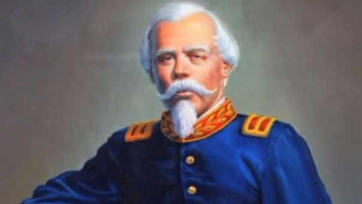

(Francisco Bolognesi Cervantes; Reyes, 1816 - Arica, 1880) Coronel peruano. Francisco Bolognesi es particularmente recordado por su heroica participación en la batalla de Arica, en la que murió el 7 de junio de 1880 luchando junto a sus soldados y después de pronunciar unas célebres palabras: "Tengo deberes sagrados que cumplir y los cumpliré hasta quemar el último cartucho". Su valentía y coraje han pasado a la historia como ejemplo de soldado de honor y de espíritu guerrero.
